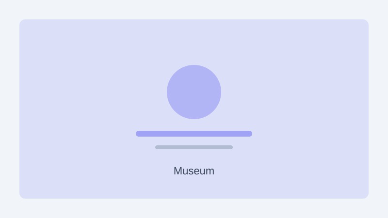

A maritime museum has opened a new exhibition tracing historic shipping routes that connected Asian ports over the past five centuries. The display features navigational instruments, ship models, and cargo manifests recovered from archival collections across the region.
Curators said the exhibition highlights how spice, porcelain, and textiles moved along well-travelled sea lanes long before modern container shipping. Interactive maps allow visitors to follow voyages from port to port and compare journey times across different eras.
The exhibition runs daily from 10 am to 6 pm, with extended hours on Friday evenings. Guided tours in English and Mandarin are available on weekends, and school groups can book weekday visits through the museum's education office.